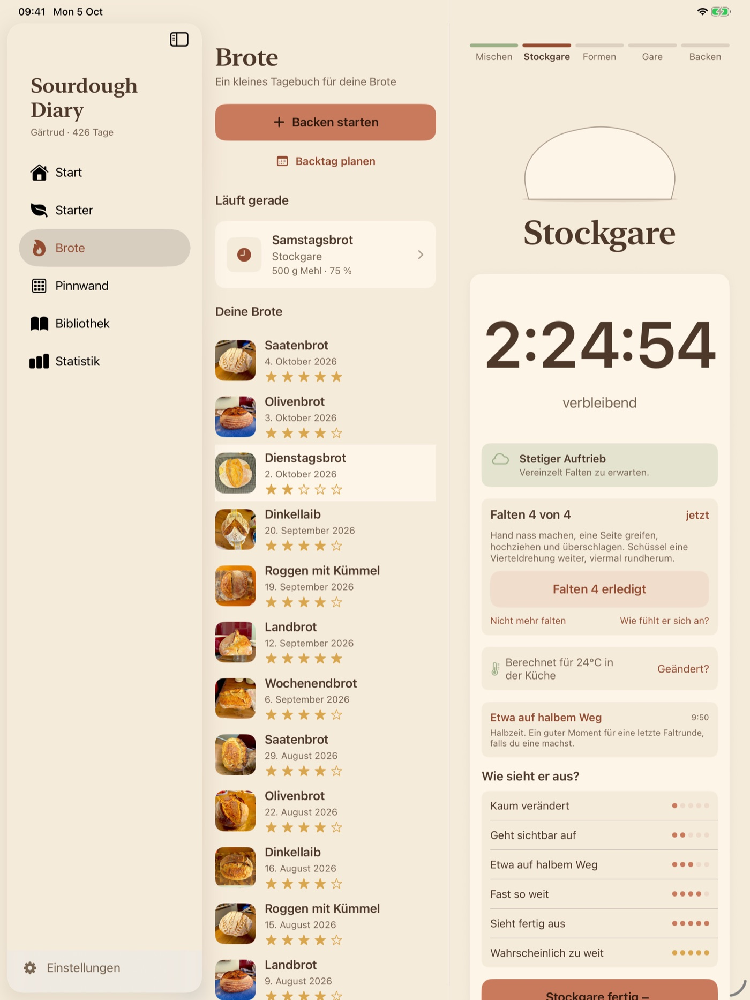
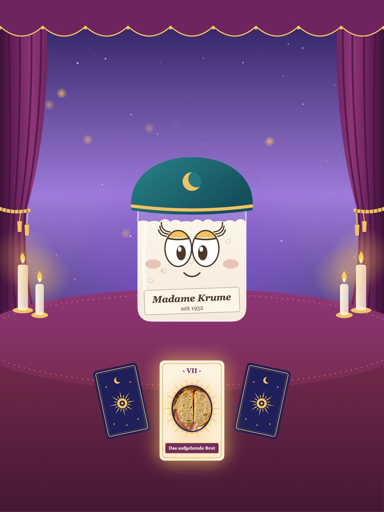

Jeder Schritt mit Timer
Eine Uhr pro Schritt. Sie läutet, wenn es so weit ist.
Jeder Schritt sagt, was zu tun ist: mit deinen Gramm und der Zeit, die es in deiner Küche braucht.
So läuft ein Backtag
Begleitet jeden Backtag, vom Starter bis zur Kruste.
Laden im App Store Bald im App Store

Eine Uhr pro Schritt. Sie läutet, wenn es so weit ist.
Jeder Schritt sagt, was zu tun ist: mit deinen Gramm und der Zeit, die es in deiner Küche braucht.
So läuft ein BacktagLernt deinen Starter kennen, nicht den Durchschnitt.
Sag ihr, wann er am Höhepunkt war, und die nächste Vorhersage stimmt besser.
Mehr über den Starter
Was schiefging, und was du nächstes Mal änderst.
Dann nochmal backen, die Änderung schon eingetragen.

Ein Tagebuch über alles, was du gebacken hast.
Jedes fertige Brot hängt als Polaroid an der Wand.
Mehr über das Tagebuch
Ein Beispielplan. Deiner wird aus deinem Starter und deiner Küche berechnet.
27 g Starter, 54 g Mehl, 54 g Wasser.
Eine halbe Stunde vor dem Ansetzen bereit.
Erst Mehl und Wasser, dann der Starter.
Vier Stunden auf einer Uhr, mit dem Falten mittendrin.
Rundwirken, Zwischengare, dann formen.
Kalte Gare über Nacht.
Eingeschnitten, gebacken und aufgeschrieben.
Du beginnst mit Mehl und Wasser? Sie begleitet dich durch die ersten Tage, auch durch den, an dem die meisten aufgeben.
Kurze Texte darüber, warum Sauerteig tut, was er tut. Die App verlinkt den richtigen, wenn ein Brot danebengeht.
Füttern eintragen über Siri, ein Widget oder die Apple Watch.

Eine Prophezeiung für jedes Brot.
Füge ein Foto der Krume hinzu und tritt in ihr Zelt. Sie legt die Karten, dreht eine um und liest deinem Brot die Zukunft.

Es liegt auf deinen Geräten und in deiner eigenen iCloud. Niemand sonst kann es lesen, auch der Entwickler nicht.
App öffnen und anfangen. Heb eine Sicherung auf, wenn du magst. Die ganze Erklärung ist kurz und steht hier.
Für iPhone, iPad und Apple Watch, auf Deutsch und Englisch.
Laden im App Store Bald im App Store